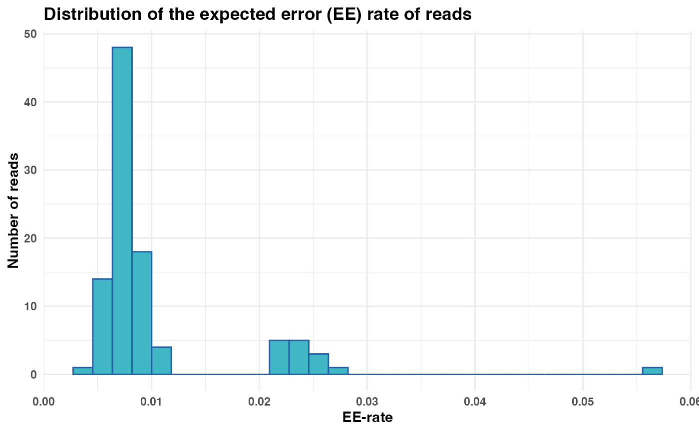

Plot distribution of expected error (EE) rate of reads
Source:R/plot_ee_rate_dist.R
plot_ee_rate_dist.RdGenerates a histogram visualizing the distribution of the expected error (EE) rate for reads. The EE rate represents the cumulative probability of errors in a read, calculated from Phred quality scores.
Usage
plot_ee_rate_dist(
fastq_input,
n_bins = 30,
plot_title = "Distribution of the expected error (EE) rate of reads"
)Arguments
- fastq_input
(Required). A FASTQ file path or FASTQ object containing reads. See Details.
- n_bins
(Optional). Number of bins used in the histogram. Defaults to
30, which is the default value inggplot2::geom_histogram().- plot_title
(Optional). The title of the plot. Defaults to
"Distribution of the expected error (EE) rate of reads". Set to""for no title.
Details
A histogram is plotted using ggplot2 to visualize the distribution of EE
rates. The user can adjust the number of bins in the histogram using the
n_bins parameter.
fastq_input can either be a file path to a FASTQ file or a FASTQ
object. FASTQ objects are tibbles that contain the columns Header,
Sequence, and Quality, see readFastq.
The EE rate is calculated as the sum of error probabilities per read, where the error probability for each base is computed as \(10^{(-Q/10)}\) from Phred scores. A lower EE rate indicates higher sequence quality, while a higher EE rate suggests lower confidence in the read.
If fastq_input contains more than 10 000 reads, the function will
randomly select 10 000 rows for downstream calculations. This subsampling is
performed to reduce computation time and improve performance on large
datasets.
Examples
# Define input file path
fastq_input <- system.file("extdata/small_R1.fq", package = "Rsearch")
# Generate and display histogram
ee_plot <- plot_ee_rate_dist(fastq_input = fastq_input)
print(ee_plot)
